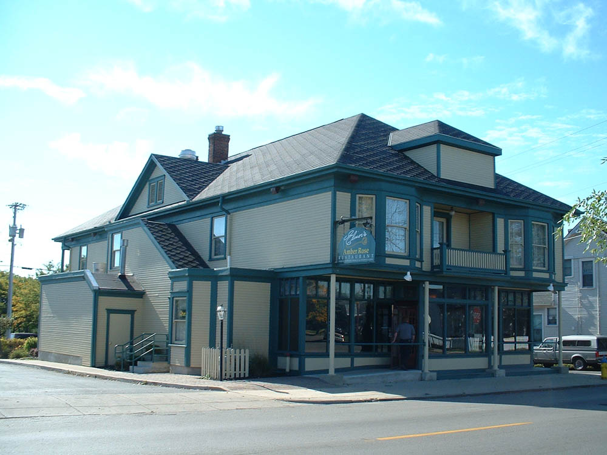

Amber Rose Restaurant

A playful spirit called Chickee haunts Dayton's Amber Rose Restaurant, which is located at 1400 Valley Street. Chickee was the daughter of a former owner of the building, which is roughly a hundred years old. She breaks dishes occasionally and sometimes makes the music come on by itself.
Thanks to Ryan for the picture.
Back